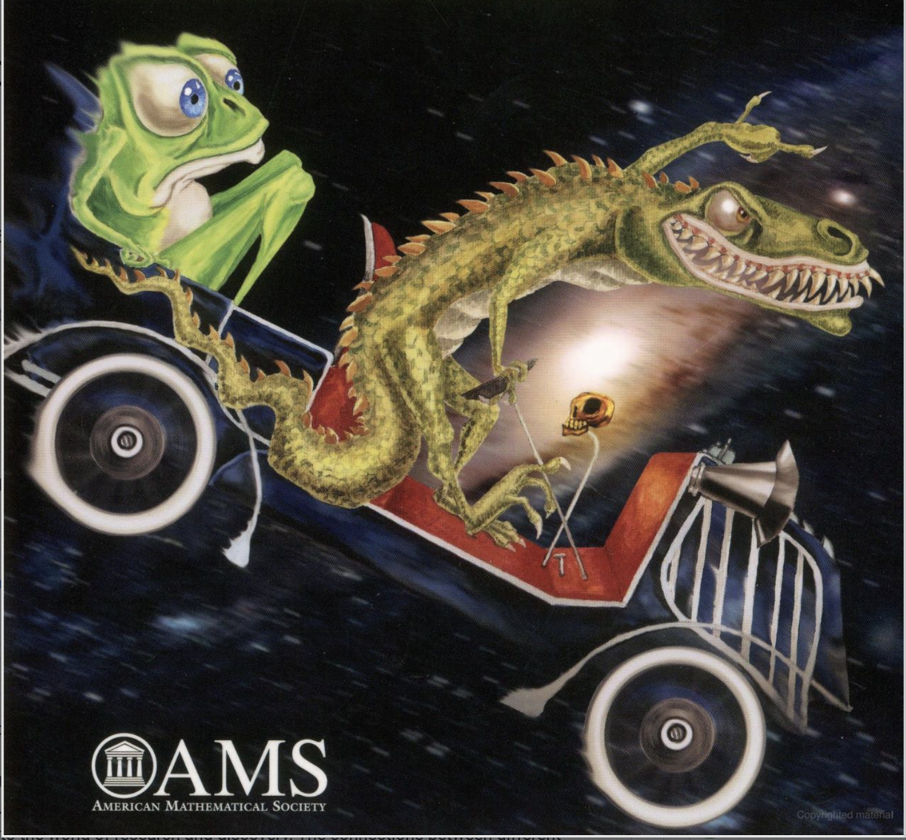

Undergraduate
research in mathematics and related areas

Undergraduate research in mathematics (StemForAll) never stops at
the University of Rochester. In addition to summer programs
described on this website, research group are working year-around on
topics they are interesting in. When the Fall semester begins, we
are going to decide on a meeting time. If you are interested in
joining one of the research groups or starting another one, please
come to my office next Friday. If you have any questions beforehand,
please feel free to email me at iosevich@gmail.com. This program is
co-organized by me and Azita Mayeli (CUNY).
Several of my colleagues, both from Rochester and beyond, played a
crucial role in the success of this program over the years.
Charlotte Aten, Steven Kleene, Azita Mayeli, Sevak Mkrtchyan,
Jonathan Pakianathan and several others made this program possible
and continue to make it possible to this day.
The topics we will be research during the Fall 2024 semester are yet
to be determined, but with very high probability we are going to run
a research group on signal recovery. The basic idea is the
following. Suppose that
and we wish to transmit it via its Fourier transform
However, if
some of the frequencies are missing, for example if
are unobserved for some
what
reasonable assumptions can we still recover the function (or the
signal, as electrical engineers tend to call it) exactly? We are
also going to explore some applications of signal recovery to data
science. This project ran during the StemForAll2024 workshop this summer
and is going to continue into the Fall. Next summer, the entire
StemForAll2025 workshop will be dedicated to the pure and applied
aspects of signal recovery.
Another project that is likely to run during the Fall semester is
the investigation of the Erdos distance problem on Riemannian
manifolds. The basic question is the following Let
be a finite
subset of
, a
d-dimensional compact Riemannian manifold without a boundary. Let
denote the distance set of
with respect
to the Riemannian metric, i.e
, where
is the
Riemannian metric on
. In Euclidean
space it is conjectured that
, up
to logarithmic terms, with the example provided by the
piece of the integer lattice. On general manifolds, such rich
arithmetic does not typically exist, which makes it unclear what the
manifold variant of the Erdos distance conjecture should even say.
This is a fascinating topic with lots to explore!